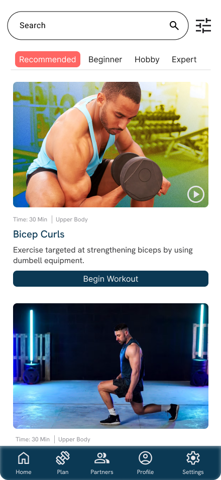
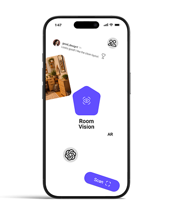

Design & Product
Figma, Photoshop, UX Research, Wireframing, Prototyping, Usability Testing, Project Management
Portfolio for design, product, and front-end roles
UX/UI Designer · Product Designer · Front-End Developer
Cornell Information Science graduate designing and building interactive tools, game interfaces, data products, and rapid prototypes across product, design, and front-end workflows.

Selected work

UX Designer / Researcher
Researched and designed a campus fitness app concept helping Cornell students learn equipment, build workout plans, and find workout partners through beginner-friendly guidance.

UX/UI Designer / Feed Feature Owner
Designed and tested a room-planning app through a four-month HCI process spanning interviews, personas, iterative prototypes, and usability testing.

Design Lead / UI Lead
Led interface and game-design work for a cooperative mobile party game while coordinating design production across a 9-person team.

Full-Stack Developer
Built a responsive full-stack cocktail site with public discovery features and admin tools for managing content.
Core toolkit
Figma, Photoshop, UX Research, Wireframing, Prototyping, Usability Testing, Project Management
HTML, CSS, JavaScript, Python, Java, C, C++, OCaml, PHP, SQL, D3.js
Game UI, LibGDX, Tiled, Playtesting, Fusion360, Arduino, Laser Cutting, 3D Printing
About
I work across research, interface design, prototyping, and implementation. My projects combine visual clarity with practical engineering, from game interfaces and data visualization to full-stack web tools and physical prototypes. I work well across design, engineering, and product teams, especially in fast-moving environments where prototypes need to become usable products. I am currently seeking roles where I can contribute to thoughtful product experiences and keep building across design and code.
Let's connect